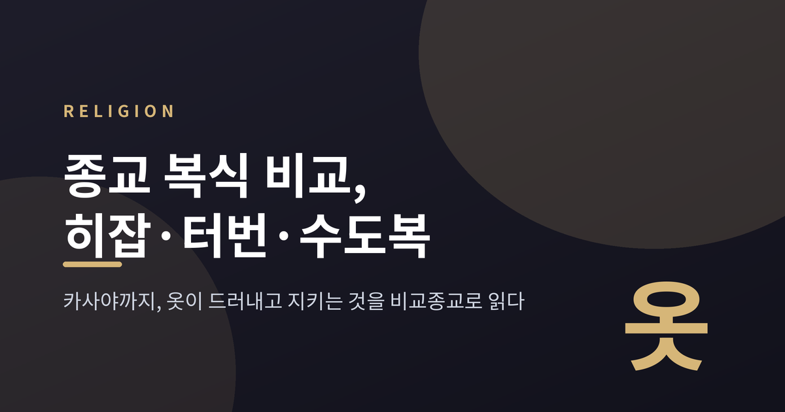
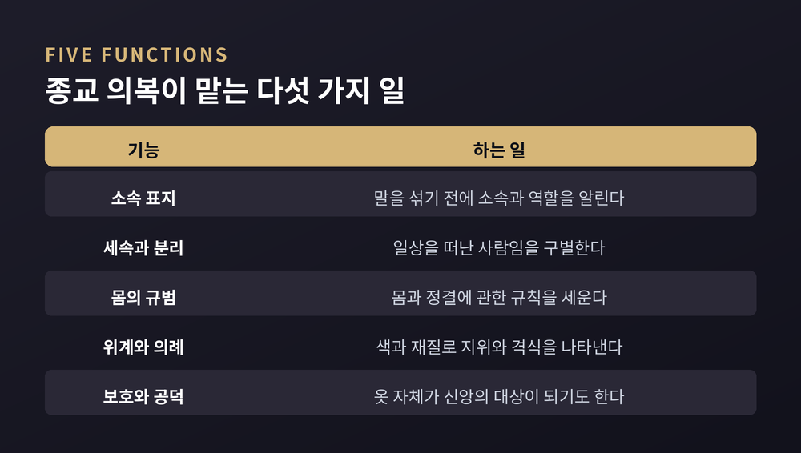
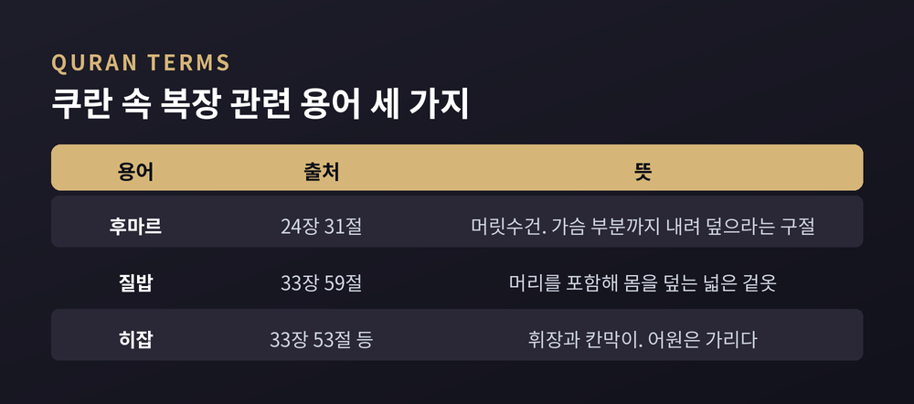
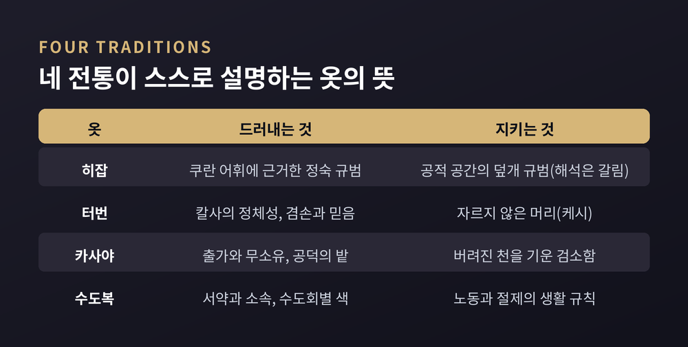
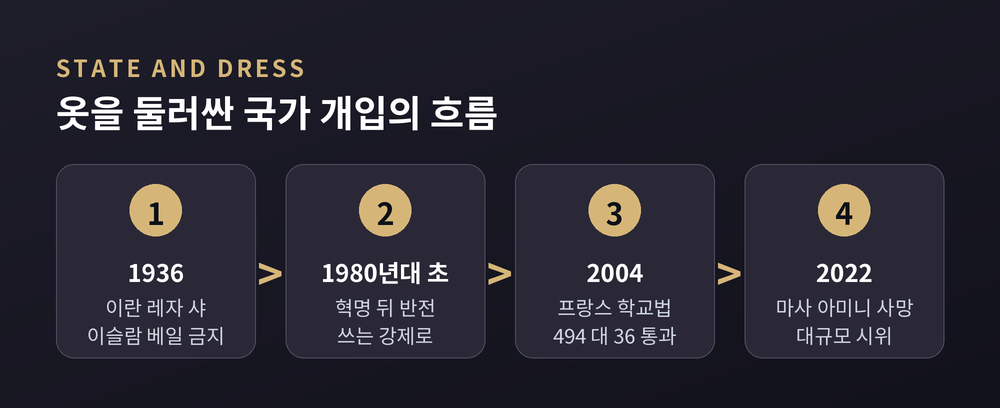
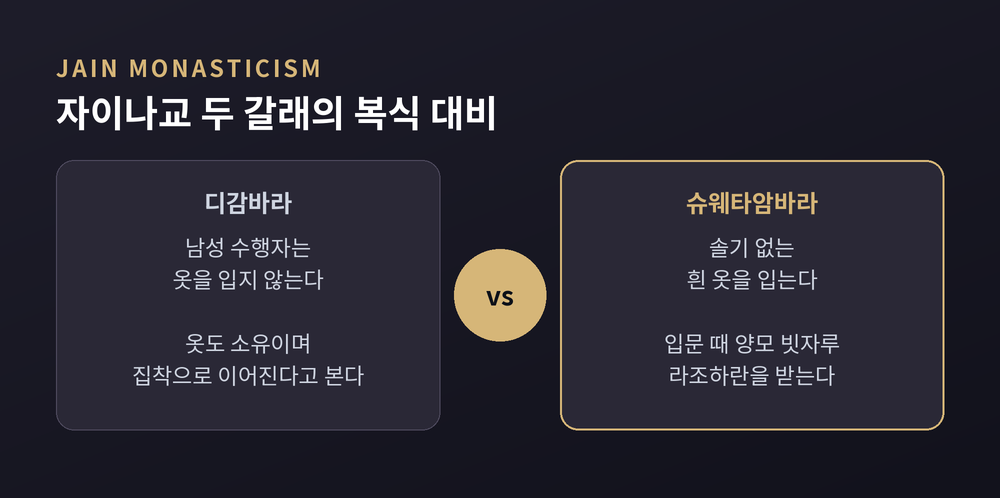

이번 글에서는 종교 복식을 비교종교학의 눈으로 정리해 보겠습니다. 히잡, 터번, 수도복, 카사야가 각각 어떤 규범과 역사 위에 놓여 있는지, 그리고 국가와 사회가 그 옷을 어떻게 다뤄 왔는지를 살펴봅니다. 어느 신앙의 옷차림이 옳은지를 가리는 글이 아니라, 옷이 종교 안에서 무엇을 하는지를 관찰하는 글입니다.

옷은 가장 먼저 눈에 들어오는 표지입니다. 말을 섞기 전에 소속과 역할을 먼저 알립니다. 종교가 옷에 의미를 싣게 된 것은 그래서 자연스러운 일입니다.
불교 승복을 다룬 백과사전의 설명이 좋은 출발점이 됩니다. 승복은 가난과 단순함의 이상을 반영했고, 착용자를 일상의 세계를 떠나 수행의 길에 들어선 사람으로 구별했습니다. 색과 재질과 조각의 수는 지위와 의례의 격식을 나타냈습니다. 하나의 옷이 구별, 서약, 위계를 동시에 맡은 셈입니다.
이 글에서는 이런 역할을 다섯 갈래로 묶어 보겠습니다. 소속 표지, 세속과의 분리, 신체와 정결의 규범, 위계와 의례의 격식, 보호와 공덕의 상징입니다. 다만 이 다섯 분류는 아래 사례를 읽기 위해 필자가 세운 틀이며, 학계의 공식 분류는 아닙니다.

먼저 용어부터 짚겠습니다. 쿠란에서 여성의 복장과 관련해 등장하는 말은 후마르와 질밥입니다. 24장 31절은 여성에게 머릿수건을 가슴 부분까지 내려 덮으라고 말합니다. 33장 59절은 겉옷을 몸 위로 드리우라고 이릅니다.
정작 히잡이라는 단어는 다르게 쓰입니다. 쿠란에 여러 번 나오지만 여성의 옷을 가리키지 않고 휘장이나 칸막이라는 뜻으로 쓰입니다. 어원은 '가리다, 막다'를 뜻하는 동사입니다. 오늘날 히잡이 옷을 가리키는 말이 된 것은 이후 용법의 변화입니다. 참고로 쿠란 속 히잡의 등장 횟수는 자료마다 다르게 적혀 있어, 이 글에서는 횟수를 단정하지 않겠습니다.
해석의 층도 한 겹이 아닙니다. 후마르는 '덮개'를 뜻하는 말이고, 이슬람 이전 아라비아에서도 여성이 쓰던 머리 덮개였다고 설명됩니다. 이 관점에서 24장 31절의 초점은 쓸지 말지보다 어디까지 내려 덮느냐에 놓입니다. 질밥은 후마르보다 훨씬 넓어 머리를 포함해 몸 전체를 덮는 겉옷으로 풀이됩니다.
의무인지 아닌지를 두고는 입장이 갈립니다. 수니와 시아 학자 다수는 가족이 아닌 남성 앞의 공적 공간에서 히잡을 의무로 봅니다. 반면 일부 근대주의 사상가와 쿠란주의자는 의무가 아니라고 주장합니다. 얼굴까지 가리는 니캅과 부르카는 법제와 해석 모두에서 또 다른 쟁점입니다. 어느 쪽이 신학적으로 옳은지는 이 글이 판단할 영역이 아닙니다. 다만 같은 텍스트를 두고 이 정도의 폭이 존재한다는 사실은 기록해 둘 만합니다.

시크교의 터번, 다스타르는 흔히 시크교 신앙의 상징으로 소개됩니다. 그런데 엄밀히 말하면 터번은 5K에 속하지 않습니다. 5K는 케시(자르지 않은 머리), 캉가(빗), 카라(강철 팔찌), 카차(속바지), 키르판(단검)입니다. 터번은 이 가운데 케시를 덮고 정돈하는 수단입니다.
케시는 신이 준 선물, 그리고 신의 뜻을 받아들이는 태도를 뜻한다고 설명됩니다. 터번은 긴 머리를 보호하는 실용적 기능과 겸손과 믿음이라는 영적 의미를 함께 지닙니다. 5K의 틀이 자리 잡은 계기는 1699년 구루 고빈드 싱의 칼사 창설입니다. 다만 입문하지 않고도 5K를 지키는 시크교도가 많다는 점은 함께 적어 둡니다.
역사는 생각보다 유동적입니다. 한 역사가는 초기 다섯 구루가 터번이 아니라 짠 모자를 썼다고 봅니다. 터번이 두드러진 것은 6대 구루 시기, 시크교가 무장화하던 때라는 설명입니다. 이 서술은 단일 자료에 기댄 것이므로 하나의 견해로 읽어 주시길 권합니다.
터번은 법정에도 섰습니다. 1982년 영국 상원의 만들라 대 다월리 사건이 대표적입니다. 터번을 벗지 않는다는 이유로 버밍엄의 한 학교가 시크교 소년의 입학을 거부했고, 상원은 시크교도를 인종관계법상 민족 집단으로 인정했습니다. 이 판결은 '민족-종교'라는 개념이 자리 잡는 계기가 되었습니다. 1990년 캐나다에서는 발타지 싱 딜런이 터번을 쓴 채 캐나다 연방경찰(RCMP)에서 복무할 수 있게 되었습니다.
반대편의 사례도 있습니다. 2016년 퀘벡 법원은 몬트리올 항만의 시크교도 트럭 기사에게 안전모 착용을 요구한 결정을 받아들였습니다. 신앙 표현과 안전 규정이 부딪칠 때 결론이 하나로 모이지 않는다는 뜻입니다.
카사야, 우리말로 가사는 인도에서 붓다의 제자들이 입던 옷에서 출발합니다. 이름은 갈색이나 황색 염료를 뜻하는 말에서 왔고, 옷 자체를 가리키는 치바라라는 말은 색과 상관없이 쓰였습니다.
구성은 세 벌입니다. 하의 속옷에 해당하는 안타르바사, 상의인 웃타라상가, 바깥에 두르는 상가티입니다. 원래 재료는 버려진 천이었고, 그 천을 기워 붙였습니다.
여기에 유명한 전승이 붙습니다. 아난다가 마가다의 논 모양을 본떠 천을 잘라 기웠다는 이야기입니다. 그래서 한자 문화권에서는 복전의(福田衣), 곧 복의 밭을 이룬 옷이라고 부릅니다. 스님을 공덕이 자라는 밭에 견주는 상징입니다. 다만 이는 전승과 상징 해석이므로 역사적 사실로 단정하지는 않겠습니다.
색에 담긴 뜻도 흥미롭습니다. 선호된 황갈색은 '섞인 색'이라는 의미를 품어, 옷의 색에조차 집착하지 말라는 가르침을 드러낸다고 풀이됩니다. 인도에서는 부파마다 색이 달랐고, 티베트는 붉은 승복, 일본은 왼쪽 어깨에 걸치는 조각보 형태의 게사로 갈라졌습니다.
승복은 사회적 힘도 가집니다. 2007년 미얀마에서는 승려들이 시위의 선두에 섰고, 이 시위는 '사프란 혁명'이라 불렸습니다. 군부는 승복을 대량으로 주문하고 군인과 죄수의 머리를 깎아 승려로 위장시키려 했다고 전해집니다. 옷 하나가 얼마나 큰 권위의 표지인지를 반대로 보여 준 장면입니다.
그리스도교 수도복은 튜닉, 스카풀라, 쿨, 베일 같은 요소로 이루어집니다. 그런데 처음부터 상징으로 설계된 옷은 아니었습니다.
530년경 베네딕도가 쓴 규칙은 73장으로 이루어져 있습니다. 옷을 다룬 55장은 의외로 실무적입니다. 의복은 지역과 기후에 맞게, 아빠스의 판단에 따라 마련합니다. 세탁용 여벌을 주고, 낡은 옷은 가난한 이에게 줍니다. 그리고 옷의 색이나 거칠기를 불평하지 말라고 이릅니다.
스카풀라는 원래 일할 때 두르는 앞치마, 곧 '노동을 위한 스카풀라'였습니다. 쿨도 후드가 달린 외투에서 나왔고, 규칙은 겨울용과 여름용 두 가지 쿨을 두었습니다. 그러던 것이 시간이 지나 스카풀라는 '그리스도의 멍에'라는 신학적 의미를 얻었고, 쿨은 성무일도에 입는 예복으로 발전했습니다.
색도 마찬가지입니다. 규칙은 색을 정하지 않았습니다. 검정이 우세해지면서 '검은 수도자'가 베네딕도회를 뜻하는 말이 되었습니다. 수도원 측은 검정을 세상에 대해 죽고 그리스도 안에 감추어진 삶을 사는 것의 표지로 설명합니다. 시토회는 흰색, 프란치스코회는 갈색이나 회색으로 색이 갈렸습니다.
지금은 어떨까요. 제2차 바티칸 공의회 이후 많은 공동체가 수도복을 단순화하거나 현지 복장을 따랐고, 아예 쓰지 않는 곳도 있습니다. 1996년 교황 요한 바오로 2세의 문헌은 시대와 장소에 맞추되 봉헌 신분이 알아볼 수 있는 복장을 권고했습니다. 예전엔 옷이 곧 서약의 얼굴이었다면, 지금은 옷의 무게를 다시 재고 있는 셈입니다.

옷은 신앙의 표현이면서 국가가 손대는 대상이기도 합니다. 이란의 역사가 가장 극적인 예입니다.
1936년 1월 8일 레자 샤는 히잡과 차도르를 포함한 이슬람 베일을 금지했습니다. 근대화를 앞세운 조치였고, 경찰이 공공장소에서 베일을 벗기는 강압적 집행이 뒤따랐습니다. 이 정책은 1941년 그의 퇴위와 함께 끝났습니다. 그러다 1979년 혁명 이후 방향이 정반대로 뒤집혔습니다. 벗기는 강제가 씌우는 강제로 바뀐 것입니다. 의무화의 정확한 시점은 자료마다 1979년, 1981년, 1983년으로 엇갈려서, 여기서는 1980년대 초에 법제화되었다고만 적겠습니다. 2022년에는 22세 여성 마사 아미니가 도덕경찰 구금 중 사망했고, 대규모 시위가 이어졌습니다.
프랑스도 비슷한 긴장 위에 있습니다. 2004년 2월 10일 하원은 공립 초중등학교에서 눈에 띄는 종교 표지를 금지하는 법안을 찬성 494, 반대 36으로 통과시켰습니다. 대상에는 이슬람 머릿수건뿐 아니라 유대교 키파, 시크교 터번, 큰 십자가가 포함되었고, 작은 펜던트 십자가와 다윗의 별은 허용되었습니다. 지지하는 쪽은 공교육의 중립성, 곧 라이시테를 내세웠습니다. 비판하는 쪽은 종교의 자유를 침해한다고 봅니다. 2012년 유엔 인권위원회는 터번을 쓴 시크교 학생의 퇴학이 국제 규약 위반이라고 판단하기도 했습니다.
두 나라의 방향은 반대이지만 구조는 닮았습니다. 어느 쪽이든 개인이 무엇을 입을지를 국가가 정하고 있다는 점입니다.

마지막 사례는 조금 낯설 수 있습니다. 자이나교 디감바라 파의 남성 수행자는 옷을 입지 않습니다. 이름부터 '허공을 입은'이라는 뜻입니다. 옷 역시 소유이고, 소유는 집착으로 이어진다고 보기 때문입니다. 같은 자이나교의 슈웨타암바라 파는 솔기 없는 흰 옷을 입습니다. 두 파는 해탈에 나체가 필수인지를 두고 교리가 갈립니다.
여기서 '무엇을 입느냐'와 '입지 않느냐'가 같은 질문에 대한 서로 다른 답이라는 점이 보입니다. 옷을 입어 몸을 지키는 전통이 있고, 옷마저 벗어 집착을 끊으려는 전통이 있습니다. 유대교 키파의 경우는 또 다릅니다. 히브리 성서에 명시된 계명은 없고 후대 랍비 전통에 속하며, 정통파는 상시, 보수파는 기도와 공부 때, 개혁파는 선택으로 씁니다. 같은 전통 안에서도 옷의 무게가 이렇게 다릅니다.

정리하면 이렇습니다.
히잡은 텍스트의 어휘와 오늘의 용법이 어긋난 채 논쟁이 이어지고, 터번은 머리카락이라는 몸의 규범을 지키는 천입니다. 카사야는 버려진 천을 기워 공덕의 밭이라는 이름을 얻었고, 수도복은 일하던 앞치마가 서약의 표지가 되었습니다. 네 옷은 모두 다르지만, 몸 위에 신념을 걸친다는 점에서는 같은 질문에 서 있습니다.
"옷은 종교가 몸에 남기는 가장 눈에 띄는 문장이다."
이 한 줄이 이번 글의 결론입니다. 그 문장을 읽는 방법은 하나가 아닙니다. 어떤 이에게는 서약이고, 어떤 이에게는 정체성이고, 어떤 이에게는 논쟁입니다.
그렇다면 옷을 통해 종교를 이해할 수 있느냐고 물으신다면, 절반은 가능하다고 답하겠습니다. 옷은 입구일 뿐이고, 그 안의 이야기는 여전히 입은 사람이 씁니다.